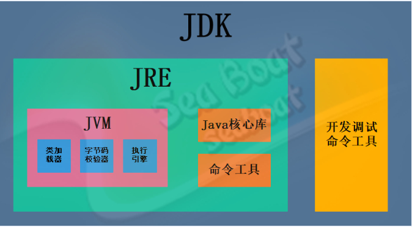

java学习(未完待续)
Java介绍
简介
java 是由 Sun Microsystems 公司于 1995 年 5 月推出的高级程序设计语言。 Java 可运行于多个平台，如 Windows, Mac OS 及其他多种 UNIX 版本的系统。 移动操作系统 Android 大部分的代码采用 Java 编程语言编程。
Java分为三个体系：
- JavaSE（J2SE）（Java2 Platform Standard Edition，java平台标准版）
- JavaEE(J2EE)(Java 2 Platform,Enterprise Edition，java平台企业版)
- JavaME(J2ME)(Java 2 Platform Micro Edition，java平台微型版)。
主要特性
-
Java 语言是简单的： Java 语言的语法与 C 语言和 C++ 语言很接近，使得大多数程序员很容易学习和使用。另一方面，Java 丢弃了 C++ 中很少使用的、很难理解的、令人迷惑的那些特性，如操作符重载、多继承、自动的强制类型转换。特别地，Java 语言不使用指针，而是引用。并提供了自动分配和回收内存空间，使得程序员不必为内存管理而担忧。
-
Java 语言是面向对象的：
Java 语言提供类、接口和继承等面向对象的特性，为了简单起见，只支持类之间的单继承，但支持接口之间的多继承，并支持类与接口之间的实现机制（关键字为 implements）。Java 语言全面支持动态绑定，而 C++语言只对虚函数使用动态绑定。总之，Java语言是一个纯的面向对象程序设计语言。
- Java语言是分布式的：
Java 语言支持 Internet 应用的开发，在基本的 Java 应用编程接口中有一个网络应用编程接口（java net），它提供了用于网络应用编程的类库，包括 URL、URLConnection、Socket、ServerSocket 等。Java 的 RMI（远程方法激活）机制也是开发分布式应用的重要手段。
-
Java 语言是健壮的： Java 的强类型机制、异常处理、垃圾的自动收集等是 Java 程序健壮性的重要保证。对指针的丢弃是 Java 的明智选择。Java 的安全检查机制使得 Java 更具健壮性。
-
Java语言是安全的：
Java通常被用在网络环境中，为此，Java 提供了一个安全机制以防恶意代码的攻击。除了Java 语言具有的许多安全特性以外，Java 对通过网络下载的类具有一个安全防范机制（类 ClassLoader），如分配不同的名字空间以防替代本地的同名类、字节代码检查，并提供安全管理机制（类 SecurityManager）让 Java 应用设置安全哨兵。
- Java 语言是体系结构中立的：
Java 程序（后缀为 java 的文件）在 Java 平台上被编译为体系结构中立的字节码格式（后缀为 class 的文件），然后可以在实现这个 Java 平台的任何系统中运行。这种途径适合于异构的网络环境和软件的分发。
- Java 语言是可移植的：
这种可移植性来源于体系结构中立性，另外，Java 还严格规定了各个基本数据类型的长度。Java 系统本身也具有很强的可移植性，Java 编译器是用 Java 实现的，Java 的运行环境是用 ANSI C 实现的。
- Java 语言是解释型的：
如前所述，Java 程序在 Java 平台上被编译为字节码格式，然后可以在实现这个 Java 平台的任何系统中运行。在运行时，Java 平台中的 Java 解释器对这些字节码进行解释执行，执行过程中需要的类在联接阶段被载入到运行环境中。
- Java 是高性能的：
与那些解释型的高级脚本语言相比，Java 的确是高性能的。事实上，Java 的运行速度随着 JIT（Just-In-Time）编译器技术的发展越来越接近于 C++。
- Java 语言是多线程的：
在 Java 语言中，线程是一种特殊的对象，它必须由 Thread 类或其子（孙）类来创建。 通常有两种方法来创建线程： 其一，使用型构为 Thread(Runnable) 的构造子类将一个实现了 Runnable 接口的对象包装成一个线程， 其二，从 Thread 类派生出子类并重写 run 方法，使用该子类创建的对象即为线程。 值得注意的是 Thread 类已经实现了 Runnable 接口，因此，任何一个线程均有它的 run 方法，而 run 方法中包含了线程所要运行的代码。线程的活动由一组方法来控制。Java 语言支持多个线程的同时执行，并提供多线程之间的同步机制（关键字为 synchronized）。
- Java 语言是动态的：
Java 语言的设计目标之一是适应于动态变化的环境。Java 程序需要的类能够动态地被载入到运行环境，也可以通过网络来载入所需要的类。这也有利于软件的升级。另外，Java 中的类有一个运行时刻的表示，能进行运行时刻的类型检查。
开发环境
JDK JVM JRE介绍
JDK（Java Development Kit）java开发环境
JRE（Java Runtime Environment）
JVM（Java Virtual Machine）java虚拟机

JDK 包含 JRE + 开发工具
JRE 包含 JVM + 核心类库
JVM 不包含其他，是最底层
JDK介绍 功能：JDK是Java开发工具包，用于开发Java应用程序。它包含了Java编译器（javac）、Java虚拟机（JVM）、开发工具（如调试器和监视器）、类库、示例代码和其他一些开发工具。
- 作用：JDK提供了开发Java应用程序所需的所有工具和库。通过JDK，开发人员可以编写、编译和调试Java代码，并将其转换为可在JRE上运行的字节码。
JRE介绍
- 功能：JRE是Java运行时环境，用于运行已编译的Java应用程序。它包含了Java虚拟机（JVM）、类加载器、运行时类库和其他支持文件。
- 作用：JRE是Java应用程序的运行环境，当用户想要执行Java程序时，需要安装JRE。JRE负责将Java字节码翻译成机器语言并执行。
JVM介绍 JVM（Java Virtual Machine）是Java虚拟机的缩写，它是Java程序运行的核心组件。JVM是一个虚拟的计算机，它在物理计算机上模拟了一个执行Java字节码的环境。JVM负责解释和执行Java字节码，实现了跨平台性和代码安全性。
JAVA核心机制
JVM介绍 JVM（Java Virtual Machine）是Java虚拟机的缩写，它是Java程序运行的核心组件。JVM是一个虚拟的计算机，它在物理计算机上模拟了一个执行Java字节码的环境。JVM负责解释和执行Java字节码，实现了跨平台性和代码安全性。
Java字节码是一种中间代码，也称为Java类文件。它是Java源代码编译成的二进制格式，可以被Java虚拟机（JVM）解释执行。Java字节码具有跨平台的特性，因为它可以在任何安装了Java虚拟机的硬件平台和操作系统上运行。
Java字节码是一种基于栈的指令集，它使用压栈、出栈等操作来实现各种语言特性，比如变量赋值、方法调用、控制流等。Java字节码的指令集包括了大量的操作码，可以执行各种不同的操作，比如算术运算、类型转换、对象创建等等。
Java字节码通常由Java编译器生成，它们以.class文件的形式存储。当Java程序被执行时，Java虚拟机会将字节码加载到内存中，并进行解释执行。在执行过程中，Java虚拟机会根据需要将字节码转换成本地代码，从而提高程序的执行效率

JVM的优点
- 跨平台性：即“Write once , Run Anywhere” ，这是Java的核心优势。比如：Java的int永远都是32位。不像C++可能是16，32，可能是根据编译器厂商规定的变化。 Java字节码可以在任何安装了Java虚拟机的硬件平台和操作系统上运行，这使得Java程序具有很好的可移植和跨平台特性。
- 安全性：Java字节码是经过编译的二进制代码，无法被直接修改，因此可以避免一些安全问题。适合于网络/分布式环境，需要提供一个安全机制以防恶意代码的攻击。如：安全防范机制（ClassLoader类加载器），可以分配不同的命名空间以防替代本地的同名类、字节代码检查。
- 高效性：Java字节码是经过优化的中间代码，可以在运行时进行即时编译，提高程序的执行效率。客观上，高级语言运行效率总是低于低级语言的，这个无法避免。Java语言本身发展中通过虚拟机的优化提升了几十倍运行效率。比如，通过JIT(JUST IN TIME)即时编译技术提高运行效率。
- 面向对象性：面向对象是一种程序设计技术，非常适合大型软件的设计和开发。面向对象编程支持封装、继承、多态等特性，让程序更好达到高内聚，低耦合的标准。
- 健壮性：吸收了C/C++语言的优点，但去掉了其影响程序健壮性的部分（如指针、内存的申请与释放等），提供了一个相对安全的内存管理和访问机制。
- 简单性：Java就是C++语法的简化版，我们也可以将Java称之为“C++–”。比如：头文件，指针运算，结构，联合，操作符重载，虚基类等。 JVM的缺点
-
性能问题：JVM在解释执行Java字节码时，会引入一定的运行时开销，这会影响程序的执行效率。虽然JVM提供了即时编译（JIT）等优化技术，但是在某些场景下，程序的性能仍然无法满足要求。
-
内存占用问题：JVM需要管理程序的内存分配和回收，这会占用一定的系统资源，特别是堆内存的使用情况经常需要进行调优。此外，JVM对于大型应用程序的启动时间也较长。
-
安全性问题：JVM虽然具有一定的安全性，但是它也存在一些漏洞和风险。比如，恶意代码可以通过反射机制绕过JVM的访问控制，从而获取系统敏感信息。
-
异构性问题：JVM在不同的硬件平台和操作系统上可能会表现出不同的性能和特性，这会增加跨平台开发的难度。
- 调试和诊断问题：由于JVM隐藏了Java代码和底层操作系统之间的细节，所以对于一些复杂的问题，调试和诊断可能会比较困难。
JVM的运行过程
-
类加载：JVM首先需要加载Java字节码文件，这些文件通常是以.class文件的形式存在。类加载器负责将字节码文件加载到内存中，并进行验证、准备和解析等操作。
-
字节码解释与执行：JVM将加载到内存中的字节码解释成机器码，并按照指令序列依次执行。JVM提供了一组指令集，用于执行各种操作，比如变量赋值、方法调用、条件判断等。
-
运行时内存区域管理：JVM将运行时内存划分为不同的区域，包括方法区、堆、栈、程序计数器和本地方法栈等。这些区域分别用于存储类信息、对象实例、方法调用栈、线程指令地址等。
-
垃圾回收：JVM通过垃圾回收器（Garbage Collector）自动管理内存，回收不再使用的对象，释放内存空间。垃圾回收器会根据一定的策略判断对象是否可回收，并进行相应的回收操作。
-
异常处理：JVM提供了异常处理机制，当程序中发生异常时，JVM会捕获并处理异常。它会在堆栈中查找适合的异常处理器，执行相应的异常处理代码。
JVM的实现原理 包括以下几个关键组成部分：
-
类加载子系统：负责加载、验证、准备和解析类及其依赖的类。
-
内存管理子系统：负责管理程序运行时的内存分配和回收，包括堆、栈以及方法区等。
-
执行引擎：负责解释和执行字节码指令，包括解释执行和即时编译执行两种方式。
-
运行时数据区域：包括方法区、堆、栈、程序计数器和本地方法栈等，用于存储类信息、对象实例、方法调用栈等数据。
JVM的实现原理是基于规范定义的，不同的JVM实现可以有不同的优化和实现方式，但都需要保证符合Java虚拟机规范。这样，Java程序可以在不同的操作系统和硬件平台上运行，实现了Java的跨平台特性。
java源文件声明规则
当在一个源文件中定义多个类，并且还有 import 语句和 package 语句时，要注意：
- 一个源文件中只能有一个 public 类
- 一个源文件可以有多个非 public 类
- 源文件的名称应该和 public 类的类名保持一致。
- 如果一个类定义在某个包中，那么 package 语句应该在源文件的首行。
- 如果源文件包含 import 语句，那么应该放在 package 语句和类定义之间。如果没有 package 语句，那么 import 语句应该在源文件中最前面。
- import 语句和 package 语句对源文件中定义的所有类都有效。在同一源文件中，不能给不同的类不同的包声明。